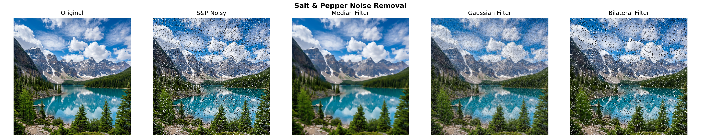
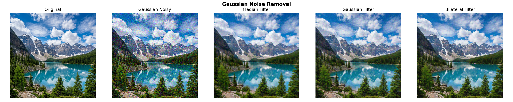

Image Noise Removal using OpenCV
Techniques: Median Filter | Gaussian Filter | Bilateral Filter
Aim
To remove Salt & Pepper and Gaussian noise from images using Median, Gaussian, and Bilateral filters in OpenCV (Python), and compare their performance using PSNR metric.
Theory
Image noise is unwanted random variation in pixel values that degrades image quality. It is introduced during image capture, transmission, or storage.
Types of Noise
- Salt & Pepper Noise: Random white (255) and black (0) pixels scattered across the image. Also called impulse noise. Common in faulty sensors or transmission errors.
- Gaussian Noise: Random values added to every pixel following a normal distribution. Results in a grainy appearance. Common in low-light photography.
Filters Used
- Median Filter: Replaces each pixel with the median value of its neighbors. Very effective for salt & pepper noise since extreme values (0 or 255) are replaced by the middle value.
- Gaussian Filter: Convolves the image with a Gaussian kernel to average out noise. Fast but blurs edges along with the noise.
- Bilateral Filter: Smooths the image while preserving edges. It considers both spatial distance and intensity difference, so edges are not blurred.
Quality Metric
PSNR (Peak Signal-to-Noise Ratio) measures the quality of a filtered image compared to the original. Higher PSNR (in dB) means better quality. Formula: PSNR = 10 × log₁₀(MAX² / MSE).
Output
Salt & Pepper Noise Removal

| Image | PSNR (dB) |
|---|
| Noisy Image | 13.36 |
| After Median Filter ★ | 23.53 |
| After Gaussian Filter | 21.08 |
| After Bilateral Filter | 13.43 |
Gaussian Noise Removal

| Image | PSNR (dB) |
|---|
| Noisy Image | 20.62 |
| After Median Filter | 23.10 |
| After Gaussian Filter | 24.73 |
| After Bilateral Filter ★ | 26.83 |
Conclusion
- Median Filter works best for Salt & Pepper noise (PSNR: 13.36 → 23.53 dB) — it replaces corrupted pixels with the median of neighbors.
- Bilateral Filter works best for Gaussian noise (PSNR: 20.62 → 26.83 dB) — it smooths noise while preserving edges.
- Gaussian Filter provides moderate denoising but blurs edges in both cases.
- The choice of filter depends on the type of noise present in the image.